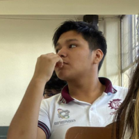
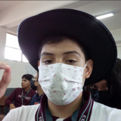

| |
Inicio | Origenes | Acerca De | FQs |
Nicte Ha |
||||
|
Sobre Nosotros |
|||
|
Tiene como objetivo principal ofrecer una ventana digital al fascinante mundo botánico que rodea nuestro entorno escolar. A través de una cuidadosa recopilación de información y fotografías, proporcionamos a nuestros visitantes una experiencia inmersiva donde podrán explorar la diversidad de plantas presentes en nuestro campus. Desde los exuberantes jardines hasta los rincones más recónditos, nuestra página muestra una amplia variedad de especies vegetales, acompañadas de datos relevantes sobre su morfología, características e importancia ecológica. Las plantas presentadas provienen tanto de áreas verdes cuidadas como de espacios naturales dentro y alrededor de nuestro centro educativo, brindando así una visión completa de la flora que nos rodea. |
|||
|
Nuesto Equipo |
|||
| Flores Carrizales Fernando Antonio | Flores Loo Nahomi | ||
|  | - Desarrollador Front-End - Responsable de la Página Principal |
- Fotografa - Responsable de la documentacion |
|
| Gonzales Ceballos Marco Angel | Hernandez Cruz Areli Yazmin | ||
|  | - Desarrollador Back-End - Responsable de la Pagina "Vivienda Natural" - Secretario |
 |
- Desarrollador Front-End - Coordinadora de las Páginas de "FQs" y "Acerca De"" - Lider |
| Nicte Ha© 2024 | Redes Sociales |
 |